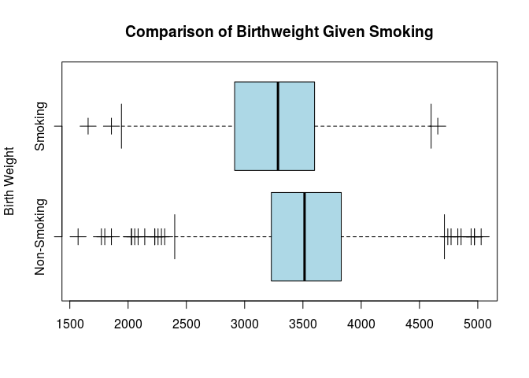
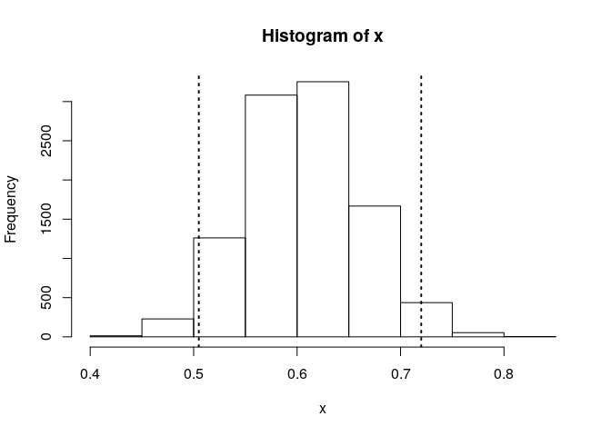

A set of 104 university students were surveyed, asking for their favourite pizza type, with the following results.
| Hawaiian | Barbecue | Supreme |
|---|---|---|
| 32 | 14 | 58 |
The Australian population has the following pizza preferences.
| Hawaian | Barbecue | Supreme |
|---|---|---|
| 0.5 | 0.3 | 0.2 |
Calculate the chi squared distance between the student sample and the Australian population.
First enter the values, really carefully:
This can either be calculated manually:
## [1] 83.70513Or the built in function can be used:
##
## Chi-squared test for given probabilities
##
## data: pizza
## X-squared = 83.705, df = 2, p-value < 2.2e-16A survery was performed on 100 people, asking for their city of birth and their eye colour. The results are tabulated below.
| Brown | Hazel | Blue | |
|---|---|---|---|
| Sydney | 10.00 | 30.00 | 20.00 |
| Melbourne | 20.00 | 10.00 | 10.00 |
If we assume that city of birth has no effect on eye colour, calculate the expected number of people that are born in Melbourne and have brown eyes.
So basically here:
# Create Vectors
sydney <- c("Brown" = 10,"Hazel" = 30,"Blue" = 20)
melbourne <- c("Brown" = 20,"Hazel" = 10,"Blue" = 10)obs_count <- rowSums(eye_Mat)
feature_proportions <- colSums(eye_Mat)/sum(eye_Mat)
outer(rowSums(eye_Mat), colSums(eye_Mat)/sum(eye_Mat))## Brown Hazel Blue
## sydney 18 24 18
## melbourne 12 16 12## sydney melbourne
## 60 40## Brown Hazel Blue
## 0.3 0.4 0.3## Brown Hazel Blue
## sydney 18 24 18
## melbourne 12 16 12Another way to remember it is that the expected value is:
\[ e_{ij} = \frac{\textsf{rowTotal} * \textsf{colTotal}}{\textsf{grandTotal}} \]
##
## Pearson's Chi-squared test with simulated p-value
## (based on 10000 replicates)
##
## data: eye_Mat
## X-squared = 13.194, df = NA, p-value = 0.0017Hence the probability of there detecting a difference between the two populations, under the assumption that the populations are identical is 0.002
A Bank is open everyday from 10am to 3pm and closed for lunch between 12pm and 1am. For one particular day the tellers serve the following number of customers in each hour.
| 10-11 | 11-12 | 1-2 | 2-3 |
|---|---|---|---|
| 80.00 | 70.00 | 69.00 | 61.00 |
Management would like to know if this is consistent with a uniform distribution of customers across the day. What is the expected number of customers per hour, if a uniform distribution is correct?
A uniform distribution would be such that each value is equal, hence:
The probability of incorrectly asserting that the values do differ over time (under the assumption that all values are identical) is given by:
##
## Chi-squared test for given probabilities
##
## data: bank
## X-squared = 2.6, df = 3, p-value = 0.4575This is equivalent to specifying equal proportions, that’s the default assumption made by R:
##
## Chi-squared test for given probabilities
##
## data: bank
## X-squared = 2.6, df = 3, p-value = 0.4575In this case there is not enough evidence to reject the assumption that the distriution varies with time.
A large sample survey of Australian businesses showed the following percentage of computers running the following operating systems.
| Windows | OS X | Linux |
|---|---|---|
| 30.00 | 50.00 | 20.00 |
Compute the expected number of computers using Linux from a sample of size 32.
Just multiply the proportion through:
## [1] 6.4hence the expected number of computers running linux is 6.4.
load.pac <- function() {
if(require("pacman")){
library(pacman)
}else{
install.packages("pacman")
library(pacman)
}
pacman::p_load(xts, sp, gstat, ggplot2, rmarkdown, reshape2, ggmap, wesanderson,
parallel, dplyr, plotly, tidyverse, reticulate, UsingR, Rmpfr, latex2exp,
mise)
# devtools::install_github("tidyverse/tidyverse")
}
load.pac()## Loading required package: pacmanNow be really careful here, make sure that the column names you choose are:
snake_case for variable and function names (using nouns in the prior and verbs in the latter), this would include vectors.
.’s so you might end up with a confusing method like as.data.frame.data.frame()ggplot as opposed to snake_case.pivot_longer etc.## low moderate high veryHigh
## 123 70 93 157## Named num [1:4] 123 70 93 157
## - attr(*, "names")= chr [1:4] "low" "moderate" "high" "veryHigh"This can be done in ggplot2, but first a tidy data frame needs to be constructed. Tidy data satisfies the following three rules:
A tidy data frame somewhat depends on context, for example:
#pivot_longer(data = iraqi, cols = names(iraqi))
iraqi.tidy <- melt(iraqi, value.name = "Count") %>% as_tibble(rownames = "Distress")
iraqi.tidy## # A tibble: 4 x 2
## Distress Count
## <chr> <dbl>
## 1 low 123
## 2 moderate 70
## 3 high 93
## 4 veryHigh 157# Base
#barplot(height = iraqi.tidy$Count, names.arg = iraqi.tidy$Distress)
# GGPlot2
ggplot(data = iraqi.tidy, mapping = aes(x = Distress, y = Count)) +
geom_col()
In making this plot you may observe that the order of the plot has been made to be alphabetical, the order of the data frame has been disregarded.
This is desirable and expected behaviour, the values of distress have not been correctly encoded, they need to be encoded as ordered factors in order to be ordered, unordered factors may as well be placed in alphabetical order.
iraqi.tidy <- melt(iraqi, value.name = "Count") %>% as_tibble(rownames = "Distress")
iraqi.tidy$Distress <- factor(iraqi.tidy$Distress, levels = iraqi.tidy$Distress, ordered = TRUE)
iraqi.tidy## # A tibble: 4 x 2
## Distress Count
## <ord> <dbl>
## 1 low 123
## 2 moderate 70
## 3 high 93
## 4 veryHigh 157# Base
fillCols <- RColorBrewer::brewer.pal(nrow(iraqi.tidy), name = "Pastel1")
barplot(height = iraqi.tidy$Count, names.arg = c("Low", "Moderate", "High", "Very High"), col = fillCols, main = "Distress Levels of Iraqi Refugees", xlab = "Distress Level", ylab = "Count")
# GGPlot2
ggplot(data = iraqi.tidy, mapping = aes(x = Distress, y = Count)) +
geom_col(mapping = aes(col = Count, fill = Distress)) +
theme_classic() +
labs(title = "Distress Levels of Iraqi Refugees") +
guides(col = FALSE)
The Australian Institute of Health and Wellness data are as follows:
aihw <- c("low" = 70.65, "moderate" = 18.5, "high" = 7.41, "veryHigh" = 3.43)
aihw.tidy <- tibble::enframe(aihw) # %>% cbind(aihw, iraqi)
names(aihw.tidy) <- c("Distress", "Count")
aihw.tidy$Distress <- factor(x = aihw.tidy$Distress, levels = aihw.tidy$Distress, ordered = TRUE)
aihw.tidy## # A tibble: 4 x 2
## Distress Count
## <ord> <dbl>
## 1 low 70.6
## 2 moderate 18.5
## 3 high 7.41
## 4 veryHigh 3.43Ideally all the data should be combined into a single data set, be mindful that pivot_longer() is gonna complain if columns with the same name have different data types, so make sure to remember to re-class categories as factors rather than factors.:
# First add a variable that can be used to distinguish the two Data Sets
iraqi.tidy$Region <- "Iraq"
aihw.tidy$Region <- "Australia"
# Combine the Data Sets
all.tidy <- rbind(iraqi.tidy, aihw.tidy)
all.tidy ## # A tibble: 8 x 3
## Distress Count Region
## <ord> <dbl> <chr>
## 1 low 123 Iraq
## 2 moderate 70 Iraq
## 3 high 93 Iraq
## 4 veryHigh 157 Iraq
## 5 low 70.6 Australia
## 6 moderate 18.5 Australia
## 7 high 7.41 Australia
## 8 veryHigh 3.43 Australiaall.tidy$Distress <- factor(all.tidy$Distress, levels = iraqi.tidy$Distress, ordered = TRUE)
# Use Pivot Wider in order to make the column names the Region and the variable the count
all.wide <- pivot_wider(data = all.tidy, names_from = Region, values_from = Count)
all.wide## # A tibble: 4 x 3
## Distress Iraq Australia
## <ord> <dbl> <dbl>
## 1 low 123 70.6
## 2 moderate 70 18.5
## 3 high 93 7.41
## 4 veryHigh 157 3.43# Base Plot
fillCols <- RColorBrewer::brewer.pal(nrow(iraqi.tidy), name = "Pastel2")
barplot(height = all.wide$Australia, names.arg = c("Low", "Moderate", "High", "Very High"), col = fillCols, main = "Distress Levels of Iraqi Refugees", xlab = "Distress Level", ylab = "Count")
## ggplot2
ggplot(data = all.tidy, mapping = aes(x = Distress, y = Count, fill = Region, col = Count)) +
geom_col(position = "dodge") +
guides(col = FALSE) +
theme_classic() +
labs(title = "Distress of Refugees", subtitle = "", y = "Frequency")Assuming that the null hypothesis is true, the expected frequency of the categories can be deterimed:
\[ \textsf{e} = 443 \times \frac{\texttt{aihw}}{100} \]
all.wide$IraqExpected <- all.wide$Australia * (sum(all.wide$Iraq)/100)
# Rename the Column to reflect expected and observed frequencies
## using Dplyer
all.wide %>%
dplyr::rename(
IraqObserved = Iraq
)## # A tibble: 4 x 4
## Distress IraqObserved Australia IraqExpected
## <ord> <dbl> <dbl> <dbl>
## 1 low 123 70.6 313.
## 2 moderate 70 18.5 82.0
## 3 high 93 7.41 32.8
## 4 veryHigh 157 3.43 15.2## using Base Functions
names(all.wide)[names(all.wide)=="Iraq"] <- "IraqObserved"
# Print the DataFrame
all.wide## # A tibble: 4 x 4
## Distress IraqObserved Australia IraqExpected
## <ord> <dbl> <dbl> <dbl>
## 1 low 123 70.6 313.
## 2 moderate 70 18.5 82.0
## 3 high 93 7.41 32.8
## 4 veryHigh 157 3.43 15.2The Chi-Squared (\(\chi^2\)) statistic is the squared distance from the the expected and observed values to the expected value:
\[ \chi^2 = \sum^n_{i=1} \left[ \frac{(o-e)^2}{e} \right] \]
This can be done readily in R:
o <- all.wide$IraqObserved
e <- all.wide$IraqExpected
all.wide$ChiDist <- ((o-e)^2/e)
ChiStat <- sum(all.wide$ChiDist)
ChiStat## [1] 1550.75And returns the value \(\chi^2 \approx 1551\)
A distribution with multiple categories of different probabilities is a multinomial distribution and can be simulated:
## [,1]
## low 316
## moderate 86
## high 25
## veryHigh 16# A more Rigurous simulation by averaging various other simulations
average_sim_count <- rmultinom(n = 10000, size = 443, prob = aihw/100) %>% rowMeans()
all.wide$IraqSimulated <- average_sim_count
all.wide## # A tibble: 4 x 6
## Distress IraqObserved Australia IraqExpected ChiDist IraqSimulated
## <ord> <dbl> <dbl> <dbl> <dbl> <dbl>
## 1 low 123 70.6 313. 115. 313.
## 2 moderate 70 18.5 82.0 1.74 82.0
## 3 high 93 7.41 32.8 110. 32.9
## 4 veryHigh 157 3.43 15.2 1323. 15.2# Building a Confidence Interval for the true mean given this Distribution
# The confidence interval is meaningless really, it can be made arbitrarily small by
# making n sufficietnly large, this is just to illustrate confidence intervals for
# population means given a sample of sample means.
sd_sim_count <- rmultinom(n = 1000, size = 443, prob = aihw/100) %>% apply(MARGIN = 1, sd) # 1 is row, 2 is column
# Calculate the t-statistic for 95%
t <- qt(p = 0.95, df = 999)
data.frame(
averageSimCount = average_sim_count,
sdSimCount = sd_sim_count,
lowerConfidenceForMean= round(average_sim_count - t * (sd_sim_count)/sqrt(1000)),
upperConfidenceForMean = round(average_sim_count + t * (sd_sim_count)/sqrt(1000))
)## averageSimCount sdSimCount lowerConfidenceForMean upperConfidenceForMean
## low 312.8818 9.557677 312 313
## moderate 81.9786 8.321460 82 82
## high 32.9205 5.451160 33 33
## veryHigh 15.2191 3.780478 15 15Or this could be simulated by using the sample() function:
frequency <- sample(1:4, 443, replace = TRUE, prob=all.wide$Australia) %>%
table %>%
tibble::enframe()
names(frequency) <- c("Distress", "Count")
frequency$Distress <- names(iraqi)
frequency## # A tibble: 4 x 2
## Distress Count
## <chr> <table>
## 1 low 307
## 2 moderate 80
## 3 high 40
## 4 veryHigh 16So the idea is, in order to test the hypothesis that there is no difference we will set up a hypothesis test.
The test statistic will be the total squared distance relative to the expected value for the distribution, this is known as the \(\chi ^2\) value.
If we can:
aihw counts)then we will reject the null hypothesis that they are the same and accept that there is a significant difference between the distribution of distress in the iraqi population. + (this necessarily show that the iraqi refugees are more distressed, merely that the distribution is different from the Australian distribution in such a way that would be unlikely to be a false positive assuming they were identical.)
In order to evaluate this, We can take a random sample of values that are distributed with the same frequency as the aihw data and measure how often the corresponding \(\chi^2\) value of the sampled values exceed that of the observed values for the iraqi values, under the assumption that the iraqi values are distributed at the same frequency of the aihw, this would amount to a False Positive for a difference.
Creating many chi statistics, comparing them and repeating gives a false positive rate:
# Calcualate the iraqi Chi Stat
e <- aihw/100 * sum(iraqi)
o <- iraqi
iraqi_chi <- sum((e-o)^2/e)
# Simulate the False Positive Rate for data following the Aus Distribution
n <- 10^3 # Simulation Length
FalsePosVec <- vector(length = n)
for (i in 1:n) {
# e <- rmultinom(1, 443, aihw/100)
e <- sample(1:4, 443, replace = TRUE, prob=aihw) %>% table
o <- aihw
# o <- iraqi
sim_chi <- sum((e-o)^2/e )
# Assume null hypotheses, this means we assume the iraqi distance does not exceed the sim distance
# The number of times it does exceed is:
# the probability of a false positive assuming the null hypothesis is correct
# this is the p-value.
FalsePosQ <- !(iraqi_chi < sim_chi) #(assuming null hypothesis means assuming iraqi distance leq to sim)
# The number of positives will be the FPR and indicative of
# the p-value)
FalsePosVec[i] <- FalsePosQ
}
pval <- mean(FalsePosVec)
print(pval)## [1] 1This could be made more efficient by using replicate rather than a for loop (replicate is to R as Table[] is to Mathematica):
e <- aihw/100 * sum(iraqi)
o <- iraqi
iraqi_chi <- sum((e-o)^2/e)
FalsePosCount <- replicate(10^4, expr = {
o <- rmultinom(n = 1, size = sum(iraqi), prob = aihw)
sim_chi <- sum((e-o)^2/e)
!(iraqi_chi < sim_chi)
})
mean(FalsePosCount)## [1] 1This returns a value of 1, indicating that the probability of a false positive, assuming that the data was randomly sampled following the probabilities of the proportions of the Australian populatation, is effectively 1, thus the null hypothesis should be rejected and the alternative hypothesis accepted.
The chi-squared value that would correspond to a false positive rate like in the above simulation, may be determined by integrating the appropriate probability density function:
\[ \begin{aligned} f_n\left( x \right)= \frac{1}{2^{\frac{n}{2}} \cdot \Gamma\left( \frac{n}{2} \right)} \cdot x^{\frac{n}{2} - 1}\cdot e^{- \frac{x}{2}} \end{aligned} \]
where the mean and variance are \(n\) and \(2n\) respectively; \(\Gamma\left( x \right)\) is the gamma function it’s very similar to the factorial function (\(x!\)):
\[\begin{aligned} x! &= \Gamma\left( x+ 1 \right)\\ x! &= x \cdot \Gamma\left( x \right)\\ \Gamma\left( n \right)&= \left( n- 1 \right)!, \qquad \forall n \in \mathbb{Z} \setminus \mathbb{Z}^- \\ \Gamma\left( z \right) &= \int_{0}^{\infty}\left( \left( \# \right)^{z- 1}\cdot e^{-\left( \# \right)} \right) \mathrm{d} \left( \# \right), \qquad z \in \mathbb{C} \wedge \Re\left( z \right)>0 \end{aligned}\]
This doesn’t seem quick to solve, plugging it into Mathematica gives:
Integrate[ 1/2^(n/2*Gamma[n/2])*x^(n/2 - 1)*e^(-x/2), {x, 0, \[Infinity]}]ConditionalExpression[(2^(1/2 - (3 Sqrt[\[Pi]])/4) Sqrt[\[Pi]])/ Log[e]^(3/2), Re[Log[e]] > 0]\[ \int^{\infty}_0\frac{1}{2^{\frac{n}{2}} \cdot \Gamma\left( \frac{n}{2} \right)} \cdot x^{\frac{n}{2} - 1}\cdot e^{- \frac{x}{2}} \enspace \mathrm{d}x = \frac{2^{\frac{1}{2}-\frac{3 \sqrt{\pi }}{4}} \sqrt{\pi }}{\log ^{\frac{3}{2}}(e)} \]
Howerver inside R this is all built into the pchisq() function and the null hypothesis may be evaluated without necessarily undertaking the simulation.
The probability of a false positive, assuming that the null hypothesis is true can be determined directly from the critical values of the Chi-Statistic.
# the null hypothesis is that there is no difference, the
# probability of detecting a difference will be the upper tail and would be the p-value
pchisq(q = iraqi_chi, df = (length(aihw)-1), lower.tail = FALSE)## [1] 0It isn’t even necessary to calculate the \(\chi^2\) value, this is built into R and can be done all at once:
##
## Chi-squared test for given probabilities
##
## data: iraqi
## X-squared = 1550.6, df = 3, p-value < 2.2e-16As opposed to using the \(\chi^2\) distribution, it is possible to use a Monte Carlo simulation all in one line as well:
##
## Chi-squared test for given probabilities with simulated p-value (based on 1000 replicates)
##
## data: iraqi
## X-squared = 1550.6, df = NA, p-value = 0.000999I can’t think of any reason to use the monte carlo simulation over the density distribution though
The data can be entered as a data frame or a matrix, the prior will be better for plotting and visualisation but the latter may be the expected format for various built in functions:
# Create Vectors
g_moringa <- c("BoRdeR" = 264,"GraSs" = 127,"SaNd" = 99)
g_vicinus <- c("BoRder" = 161,"GraSs" = 116,"SaNd" = 67)
# Capitals to emphasise change later with dimnames
# Create a Matrix
eel_Mat <- rbind(g_moringa, g_vicinus)
dimnames(eel_Mat) <- list(species = c("G.moringa", "G.vicinus"),
location = c("Border", "Grass", "Sand")
)
# Create a Data Frame
eel_DF <- eel_Mat %>%
as_tibble() %>%
add_column("Species" = factor(rownames(eel_Mat))) %>%
dplyr::select(Species, Border, Grass, Sand)
eel_DF # %>% kable()## # A tibble: 2 x 4
## Species Border Grass Sand
## <fct> <dbl> <dbl> <dbl>
## 1 G.moringa 264 127 99
## 2 G.vicinus 161 116 67In order to plot the data a tidy data frame needs to be made using tidyr::pivot_longer() or reshape2::melt(). A custom colour pallet can be specified using the following layers 2:
scale_fill_manual()
scale_color_manual()
RColorBrewer
scale_fill_brewer(palette="Dark2")scale_color_brewer(palette="Dark2")wesanderson
scale_fill_manual(values=wes_palette(n=3, name="GrandBudapest"))scale_color_(values=wes_palette(n=3, name="GrandBudapest"))scale_color_gradient(low="blue", high="red")
scale_color_gradient2(midpoint=mid, low=“blue”, mid=“white”, high=“red”, space =“Lab” )scale_color_gradientn(colours = rainbow(7))scale_fill_gradient()
scale_color_gradient(low=“blue”, high=“red”)
# Create a Tidy Data Frame
## Using Pivot Longer from `tidyverse` (dev git repo)
eel_DF_Tidy <- pivot_longer(data = eel_DF,
cols = names(eel_DF[,-1]),
names_to = "Location",
values_to = "Count")
eel_DF_Tidy$Species <- factor(eel_DF$Species)
eel_DF_Tidy$Location <- factor(eel_DF_Tidy$Location)
## Using Melt from `reshape2`
melt(eel_DF, ) %>% dplyr::rename("Location" = variable,
"Count" = value)## Using Species as id variables## Species Location Count
## 1 G.moringa Border 264
## 2 G.vicinus Border 161
## 3 G.moringa Grass 127
## 4 G.vicinus Grass 116
## 5 G.moringa Sand 99
## 6 G.vicinus Sand 67 # Instead of using dplyr I could have used `variable.name=`...,
# just done for reference
## ggplot2
violetBluePallet <- c("#511FB5", "dodgerblue3", "#e31a1c")
ggplot(data = eel_DF_Tidy,
mapping = aes(x = Location,
y = Count,
fill = Species,
col = Count)) +
geom_col(position = "dodge") +
guides(col = FALSE) +
theme_classic() +
labs(title = "blah", subtitle = "", y = "Frequency") +
scale_fill_manual(values=violetBluePallet)
In this case the two hypothesis are:
Under the assumption that both species have the same distribution (i.e. assume \(\mathrm{H}_0\) is true) each term \(x_{ij}\) will have an expected frequency of \(f = \frac{1}{n} \cdot \sum^{2}_{i= 1} \left[x_i \right]\) and hence the expected count would be the frequency multiplied by the total number of observed species:
\[\begin{aligned} x_{ij}&= f \cdot \sum^{3}_{j= 1} \left[ x_{ij} \right] \\ &= \frac{1}{n} \cdot \sum^{2}_{i= 1} \left[x_i \right] \cdot \sum^{3}_{j= 1} \left[ x_{ij} \right] \end{aligned}\]
so the resulting matrix of counts would be:
\[\begin{aligned} \begin{bmatrix} 490 \\ 344 \end{bmatrix} \times \begin{bmatrix} 0.5 & 0.29 & 0.2 \end{bmatrix} \\ = \begin{bmatrix} 250 & 143 & 98 \\ 175 & 100 & 68 \end{bmatrix} \end{aligned}\]
Assuming that the null hypothesis is true, the expected distribution between areas could be calculated by using matrix multiplcication:
species_counts <- rowSums(eel_Mat)
location_proportions <- colSums(eel_Mat)/sum(eel_Mat)
# Now Perform matrix Multiplication
species_counts ## G.moringa G.vicinus
## 490 344## Border Grass Sand
## 0.5095923 0.2913669 0.1990408## Border Grass Sand
## G.moringa 249.7002 142.7698 97.52998
## G.vicinus 175.2998 100.2302 68.47002This is actually the definition of the outer product; the Outer Product is defined as:
\[
\mathbf{u} \otimes \mathbf {v} =\mathbf {u} \mathbf {v} ^{\textsf {T}}={\begin{bmatrix}u_{1}\\u_{2}\\u_{3}\\u_{4}\end{bmatrix}}{\begin{bmatrix}v_{1}&v_{2}&v_{3}\end{bmatrix}}={\begin{bmatrix}u_{1}v_{1}&u_{1}v_{2}&u_{1}v_{3}\\u_{2}v_{1}&u_{2}v_{2}&u_{2}v_{3}\\u_{3}v_{1}&u_{3}v_{2}&u_{3}v_{3}\\u_{4}v_{1}&u_{4}v_{2}&u_{4}v_{3}\end{bmatrix}}.
\] In R vectors 3 of length \(m\) are treated as \(m \times 1\) matrices as can be observed by evaluating as.matrix(1:3) and t(as.matrix(1:3)), this means that the outer product of two vectors will be equivalent to:
\[ \mathbf {u} \otimes \mathbf {v} =\mathbf {A} ={\begin{bmatrix}u_{1}v_{1}&u_{1}v_{2}&\dots &u_{1}v_{n}\\u_{2}v_{1}&u_{2}v_{2}&\dots &u_{2}v_{n}\\\vdots &\vdots &\ddots &\vdots \\u_{m}v_{1}&u_{m}v_{2}&\dots &u_{m}v_{n}\end{bmatrix}} \]
So the expected occurence rate of the species would be:
# Determine how many species there are
species_counts <- rowSums(eel_Mat)
species_proportions <- rowSums(eel_Mat)/n
# Determine the area proportions
location_proportions <- colSums(eel_Mat)/sum(eel_Mat)
# Calculate the expected distribution of that number for those proportions
expected_counts <- base::outer(species_counts, location_proportions)
print(list(species_counts, location_proportions, expected_counts, base::outer(location_proportions, species_counts) ))## [[1]]
## G.moringa G.vicinus
## 490 344
##
## [[2]]
## Border Grass Sand
## 0.5095923 0.2913669 0.1990408
##
## [[3]]
## Border Grass Sand
## G.moringa 249.7002 142.7698 97.52998
## G.vicinus 175.2998 100.2302 68.47002
##
## [[4]]
## G.moringa G.vicinus
## Border 249.70024 175.29976
## Grass 142.76978 100.23022
## Sand 97.52998 68.47002or if you’re willing to remember that:
\[ e_{ij} = \frac{\sum{[\textsf{row}]} * \sum{[\textsf{col}]}}{n} \]
e <- matrix(1:6, nrow = 2)
for (i in 1:nrow(eel_Mat)) {
for (j in 1:ncol(eel_Mat)) {
e[i,j] <- colSums(eel_Mat)[j] * rowSums(eel_Mat)[i] / n
}
}The game plan here is to:
In order to simulate the values we need simulate data distributed at given probabilities, this is known as a multinomial distribution, it’s essentially rolling a really oddly lopsided die that matches the probabilities specified.
From that sample it is necessary to calculate what we would determine the expected distribution to be assuming that the null hypothesis was true:
overall_proportion <- expected_counts/sum(expected_counts)
# Presuming that R's internal structure is consistent
rmultinom(n = 1, size = sum(eel_Mat), prob = overall_proportion) %>% matrix(ncol = 3, nrow = 2)## [,1] [,2] [,3]
## [1,] 229 153 96
## [2,] 184 102 70# Presuming it's not
dist_prob <- overall_proportion %>% as.vector
obs_sim <- rmultinom(n = 1, size = sum(eel_Mat), prob = dist_prob) %>% matrix(ncol = 3, nrow = 2)
e_sim <- 1/n*outer(X = rowSums(obs_sim), colSums(obs_sim))
print(list(obs_sim, e_sim), 1)## [[1]]
## [,1] [,2] [,3]
## [1,] 228 144 107
## [2,] 193 99 63
##
## [[2]]
## [,1] [,2] [,3]
## [1,] 202 116 81
## [2,] 149 86 60## Sanity Check
#1:6 %>% matrix(nrow = 2, ncol =3) %>% as.vector()
#1:6 %>% as.matrix() %>% as.vector() %>% matrix(nrow = 2, ncol =3)
#1:6 %>% as.matrix() %>% as.vector() %>% matrix(nrow = 2, ncol =3) %>% as.vector()
#1:6 %>% as.matrix() %>% as.vector() %>% matrix(nrow = 2, ncol =3) %>% as.vector() %>% matrix(nrow = 2, ncol =3)If this was repeated many times over, the number of times that the \(\chi^2\) statistic was sufficiently extreme to reject the null hypothesis would represent the false positive rate, which would be an acceptable estimate for the probability of a type I error, the \(p\)-value:
The probability of rejecting the null hypothesis under the assumption that it is true (i.e. under the assumption that there is no true effect). Careful, this is different from the false discovery rate
This simulation is under the assumption that the null hypothesis is true and that the two populations are distributed equally, so the null hypothesis assumes that:
\[ \begin{aligned} &\mathrm{H}_0:\quad \chi^2_{obs} < \chi^2_{sim} \\ \end{aligned} \]
A False Positive would be an observation that violates that assumption, if the probability of a false positive, the \(p\) -value:
Calculate the Chi Distribution for the observations which will become the test statistic:
# Create expected and observed vectors
e <- expected_counts
o <- eel_Mat
n <- sum(eel_Mat)
chi_obs <- sum((e-o)^2/e)
#obs_sim <- rmultinom(n = 1, size = sum(eel_Mat), prob = dist_prob) %>% matrix(ncol = 3, nrow = 2)The idea of the simulation is to generate observations at the proportion assumed by the null hypothesis and reduce these matrices to corresponding \(\chi^2\) values.
Simulate samples at the same proportion and sample the \(\chi^2\) statistic:
# Simulate distribution
# Use `Replicate` not `for` because it's faster
dist_prob <- overall_proportion %>% as.vector
# I could also have used rmultinom to sample the split of the population across two species
# Then split those species amont locations
# or made two samples of the species and location dist and then used `table()`
sim_chi_vec <- replicate(10^4, {
## Simulate Samples
obs_sim <- rmultinom(n = 1, size = sum(eel_Mat), prob = dist_prob) %>% matrix(ncol = 3, nrow = 2)
## Calculate the expected values from the sample
## Assuming the null hypothesis that both rows are equal.
e <- outer(rowSums(obs_sim), colSums(obs_sim))/n
## Calculate the Chi Squared Statistic
sim_chi <- sum((e-obs_sim)^2/e)
sim_chi
})If a simulated distribution had a \(\chi^2\) value more extreme than the observation, the null hypothesis would be rejected, the simulation was generated under circumstanes where the null hypothesis was true and so this would be a false positive or a Type I Error.
The rate of false positives is an estimator for the probability of commiting a Type I error (the \(p\) -value), this can be calculated:
calculate_p_value <- function() {
mean(falsepos())
}
falsepos <- function() {
# If the critical value was our observation, would the simulation be less extreme?
# If not this is a false positive
# If the simulated value is more extreme than the
!(sim_chi_vec > chi_obs)
sim_chi_vec > chi_obs
}
p <- calculate_p_value()
paste("The Probability of rejecting the null hypothesis, assuming that it was true (i.e. detecting a false positive assuming there is no difference between species) is", p) %>% print()## [1] "The Probability of rejecting the null hypothesis, assuming that it was true (i.e. detecting a false positive assuming there is no difference between species) is 0.0403"## [1] "This is too high and so the null hypothesis is not rejected."Hence the probability of rejecting the null hypothesis when it is true is quite small, the \(p\) -value is less than 5% and so the null hypothesis is rejected and the alternative hypothesis, that the species are distributed differently is accepted.
This can be visualised in a histogram:

plot(myhist, col = ifelse(myhist$mid<6, "white", "lightblue"),
main= latex2exp::TeX("Simulated $\\chi^2$ Distances"),
freq = FALSE,
xlab = TeX("$\\chi^2$ distance"))
abline(v = chi_obs, col = "Indianred", lty = 2, lwd = 3) # Conditional Colour: # https://stat.ethz.ch/pipermail/r-help/2008-July/167936.html
## GGPlot2
### Make a Tidy Data Frame
chi_vals_Tib <- tibble::enframe(sim_chi_vec)
chi_vals_Tib$name[sim_chi_vec<chi_obs] <- "TruePos"
chi_vals_Tib$name[sim_chi_vec>chi_obs] <- "FalsePos"
### Plot the Data
ggplot(data = chi_vals_Tib, mapping = aes(x = value))+
geom_histogram(binwidth = 0.4, col = "white", aes(fill = name)) +
theme_classic() +
guides(fill = guide_legend("Conclustion\nStatus")) +
geom_vline(xintercept = chi_obs, lty = 3, col = "purple") +
scale_fill_manual(values = c("indianred", "lightblue"),
labels = c("False Positive / Type I", "True Positive")
) +
labs(title = latex2exp::TeX("Simulated $\\chi^2$ Values")) +
scale_x_continuous(limits = c(0, 11.5))## Warning: Removed 32 rows containing non-finite values (stat_bin).## Warning: Removed 4 rows containing missing values (geom_bar).
The \(p\)-value is a function of:
So the probability of rejecting the null hypothesis, under the assumption that it is true can be determined using a predefined function.
##
## Pearson's Chi-squared test with simulated p-value (based on 10000 replicates)
##
## data: eel_Mat
## X-squared = 6.2621, df = NA, p-value = 0.0459##
## Pearson's Chi-squared test
##
## data: eel_Mat
## X-squared = 6.2621, df = 2, p-value = 0.04367To determine whether or not the two species are distributed differently:
##
## Pearson's Chi-squared test
##
## data: .
## X-squared = 6.2621, df = 2, p-value = 0.04367ABC bank has determined the following counts of ATM use, is there any evidence to suggest that the spread is not equal?
| Mon | Tues | Wed | Thur | Fri |
|---|---|---|---|---|
| 253 | 197 | 204 | 279 | 267 |
##
## Chi-squared test for given probabilities
##
## data: atm_usage
## X-squared = 23.183, df = 4, p-value = 0.0001164##
## Chi-squared test for given probabilities with simulated p-value (based on 1000 replicates)
##
## data: atm_usage
## X-squared = 23.183, df = NA, p-value = 0.000999The \(p\) -value is less than 5% and so the null hypothesis is rejected and it is concluded that the usage differs between days of usage.
Clasp you hands together. Which thumb is on top? Everyone has two copies of a gene which determines which thumb is most comfortable on top, the variants can be labelled L and R, an individual is either LL, LR, or RR. Counts of 65 children found,
| LL | LR | RR |
|---|---|---|
| 14 | 31 | 20 |
According to Mendelian genetics 25% should be LL, 50% LR and 25% RR. Use chisq.test to see if the data is consistent with this hypothesis.
In order to deal with this type of hypothesis, it is necessary to pass the probabilities to the function as a seperate argument:
##
## Chi-squared test for given probabilities
##
## data: gene_hand
## X-squared = 1.2462, df = 2, p-value = 0.5363The \(p\) -value is 50%, this indicates that the probability of rejecting the null hypothesis, if it was true and hence commiting a Type I error is quite high.
Hence the null hypothesis is not rejected and it is concluded that:
300 adults were asked whether school teachers should be given more freedom to punish unruly students. The following results were obtained?
| In Favour | Against | No Opinion | |
|---|---|---|---|
| Men | 93 | 70 | 12 |
| Women | 87 | 32 | 6 |
Do men and women have the same distribution of opinions?
By default a Chi-Squared test in R will compare whether or not rows (observations) in a matrix have the same distribution.
This is distinct from Question 2 above where the question was:
In this case the question is:
##
## Pearson's Chi-squared test
##
## data: opinion_punish
## X-squared = 8.2528, df = 2, p-value = 0.01614The \(p\) -value is 2% indicating the probability of rejecting the null-hypothesis if it were true is quite low, hence the null hypothesis is rejected and it is concluded that men and women have differing distributions of opinions.
Two drugs are administered to patients to treat the same disease.
| Cured | Not Cured | |
|---|---|---|
| Drug A | 44 | 16 |
| Drug B | 18 | 22 |
Are the drugs equally effective?
This is the same as the eels or men/women problem, the drugs are rows / observations of different classes and the columns will be the outcome of the treatment:
drug_effect <- matrix(c(44, 18, 16, 22), nrow = 2)
rownames(drug_effect) <- c("Drug A", "Drug B")
colnames(drug_effect) <- c("Cured", "Not Cured")
chisq.test(drug_effect)##
## Pearson's Chi-squared test with Yates' continuity correction
##
## data: drug_effect
## X-squared = 7.0193, df = 1, p-value = 0.008064The p-value is <1% indicating that the probability of rejecting the null hypothesis, under the assumption that it is true, is very small.
Hence the null hypothesis is rejected and it is concluded that the drugs differ in effectiveness.
# Preamble
## Install Pacman
load.pac <- function() {
if (require("pacman")) {
library(pacman)
}else{
install.packages("pacman")
library(pacman)
}
pacman::p_load(xts, sp, gstat, ggplot2, rmarkdown, reshape2, ggmap, parallel,
dplyr, plotly, tidyverse, reticulate, UsingR, Rmpfr, swirl,
corrplot, gridExtra, mise, latex2exp, tree, rpart, lattice,
rstudioapi)
mise()
}
load.pac()## Loading required package: pacman
Load the Data
## # A tibble: 1,226 x 2
## bwt smoke
## <int> <fct>
## 1 3429 no
## 2 3229 no
## 3 3657 yes
## 4 3514 no
## 5 3086 yes
## 6 3886 no
## 7 3943 no
## 8 3771 no
## 9 3429 no
## 10 4086 yes
## # … with 1,216 more rows # Always use doubles / numeric unless the data is legitamately
# restricted to the integers, it will break functions ( and so it should)
birthwt$bwt <- as.numeric(birthwt$bwt)
birthwt$smoke <- c(FALSE, TRUE)[birthwt$smoke]
summary(birthwt)## bwt smoke
## Min. :1571 Mode :logical
## 1st Qu.:3114 FALSE:742
## Median :3429 TRUE :484
## Mean :3415
## 3rd Qu.:3743
## Max. :5029## Classes 'tbl_df', 'tbl' and 'data.frame': 1226 obs. of 2 variables:
## $ bwt : num 3429 3229 3657 3514 3086 ...
## $ smoke: logi FALSE FALSE TRUE FALSE TRUE FALSE ...## [1] 1226 2## [1] 1226## [1] 2##
## FALSE TRUE
## 742 484
desc_stats <- function(x) {
mean(x)
median(x)
var(x)
sd(x)
}
(desc_stats <- data.frame(
mean = apply(birthwt, 2, mean),
median = apply(birthwt, 2, median),
var = apply(birthwt, 2, var),
sd = apply(birthwt, 2, sd)
))## # A tibble: 2 x 4
## mean median var sd
## <dbl> <dbl> <dbl> <dbl>
## 1 3415. 3429 270498. 520.
## 2 0.395 0 0.239 0.489## [1] 1571 5029## [1] 3458## [1] 3458The quantile function returns \(x\) -axis values corresponding to a what proportion of the data is specified, so for example, for a standard normal distribution \(\mathcal{N}~\left( 0, 1 \right)\), 2.5% of the observations lie below 2 and another 2.5% lie above 2.
## 2.5%
## -1.900635## 25%
## 3114## 75%
## 3743This can be calculated thusly:
## [1] 629For normally distributed data we would expect:
\[ \textsf{IQR} = 1.349 \times \sigma \]
Remember tha the normal distribution is modelled using calculus:
\[ \begin{aligned} f(x) &= - \sqrt{\frac{k}{2\pi}} \cdot e^{k\cdot \frac{\left( x- \mu \right)^2}{2}} \\ f\left( x \right)&= \sqrt{\frac{1}{2\pi}}\cdot \sum^{\infty}_{n= 0} \left[\frac{ \left( - \frac{1}{2}z^2 \right)^n}{n!} \right] \\ \int f\left( x \right) \mathrm{d}x &= \frac{1}{\sqrt{2\pi} }\int \sum^{\infty}_{n= 0} \left[ \frac{\left( - \frac{1}{2}z^2 \right)^n}{n!} \right] \mathrm{d}z \\ &= \frac{1}{\sqrt{2\pi} }\cdot \sum^{\infty}_{n= 0} \left[ \int \frac{\left( - 1 \right)^{- 1}z^{2n}}{2^n\cdot n!} \mathrm{d}z \right] \\ &= \frac{1}{\sqrt{2\pi} }\cdot \sum^{\infty}_{n= 0} \left[ \frac{\left( - 1 \right)^n \cdot z^{2n+ 1}}{2^n\left( 2n+ 1 \right)n!} \right] \end{aligned} \]
A histogram would offer a better understanding of the data:
x <- birthwt$bwt
hist(birthwt$bwt, main = "Histogram of Birth Weight Given Smoking", col = "lightblue", border = "indianred", freq = FALSE)
Adding a Density urve is extremely difficult in base plot, it’s so much easier to use ggplot2:
birthwt_pretty <- birthwt
birthwt_pretty$smoke <- ifelse(birthwt$smoke, "Smoking", "non\nSmoking")
hist <- ggplot(birthwt_pretty, aes(x = bwt, fill = smoke, col = "black", y = ..density..)) +
theme_classic() +
labs(x = "Birth Weight", y = "Density")
plots <- list()
# Dodge
plots[[1]] <- hist + geom_histogram(position = "dodge2", col = "blue", binwidth = 300)
# Overlay
plots[[2]] <- hist + geom_histogram(binwidth = 300, col = "black")
# Single Histogram
plots[[3]] <- hist + geom_histogram(binwidth = 300, col = "black", aes(group = 1), fill = "lightblue")
# Facet Grid (i.e. Split Chart)
plots[[4]] <- hist + geom_histogram(binwidth = 300, col = "black") +
facet_grid(. ~ smoke) +
guides(fill = FALSE)
# Colour it
# Make a Facet Grid
# Add a Density Curvelayout <- matrix(c(1, 1, 2, 3, 4, 4), byrow = TRUE, nrow = 3)
# arrangeGrob(grobs = plots, layou_tmatrix = layout)
grid.arrange(grobs = plots, layout_matrix = layout)
The aggregate() function can split up data by a specified variable given a formula:
## # A tibble: 2 x 2
## smoke bwt
## <lgl> <dbl>
## 1 FALSE 3516.
## 2 TRUE 3260.## # A tibble: 2 x 2
## smoke bwt
## <lgl> <dbl>
## 1 FALSE 497.
## 2 TRUE 517.## # A tibble: 2 x 2
## smoke bwt
## <lgl> <dbl>
## 1 FALSE 3514
## 2 TRUE 3286It would also be possible to do this manually but it’s actually quite tricky: > Tibble’s will always remain as tibble’s when a column is extracted and will not yield to as.vector(), it is necessary to instead use the dplyr::pull() function or first conver the tibble to a matrix.
matrix(
c(
"Mean_Smokers" = as.matrix(birthwt)[birthwt$smoke==1,"bwt"] %>% mean(),
"Mean_NonSmoke" = as.matrix(birthwt)[birthwt$smoke==0,"bwt"] %>% mean()
))## [,1]
## [1,] 3260.285
## [2,] 3515.639Split Charts are essentially a facet grid of two historgrams corresponding to a variable, the can be generated using the lattice library which is usually bundled with base R:

This was shown previously:
# Facet Grid
ggplot(birthwt_pretty, aes(x = bwt, fill = smoke, col = "black", y = ..density..)) +
geom_histogram(binwidth = 300, col = "black") +
facet_grid(. ~ smoke) +
guides(fill = FALSE) +
theme_classic() +
labs(x = "Birth Weight", y = "Density")
This is varily easy if the data is such that one variable is a factor/logical, the syntax uses a formula, so in this case Y ~ X would by birthweights depends on smoking 4:
birthwt_pretty <- birthwt
birthwt_pretty$smoke <- ifelse(birthwt$smoke, "Smoking", "Non-Smoking")
boxplot(bwt ~ smoke, birthwt_pretty,
col = "lightblue", main = "Comparison of Birthweight Given Smoking",
xlab = "", ylab = "Birth Weight", cex = 2, pch = 3)
birthwt_pretty <- birthwt
birthwt_pretty$smoke <- ifelse(birthwt$smoke, "Smoking", "Non-Smoking")
boxplot(bwt ~ smoke, birthwt_pretty,
col = "lightblue", main = "Comparison of Birthweight Given Smoking",
xlab = "", ylab = "Birth Weight", cex = 2, pch = 3, horizontal = TRUE)
ggplot(birthwt, aes(x = smoke, y = bwt, fill = smoke)) +
geom_boxplot(show.legend = FALSE) +
scale_x_discrete(labels = c("Non\nSmoking", "Smoking")) +
theme_classic() +
labs(x = "", y = "Birth Weight", title = "Comparison of Birthweight Given Smoking Habits")
## # A tibble: 2 x 2
## smoke bwt
## <lgl> <dbl>
## 1 FALSE 3516.
## 2 TRUE 3260.# Diff is the difference like the delta or the derivative in calculus or real anlysis so X2-X1
# this represents the change from those that smoke to those that dont
# yes - no
diff(birthwt_agg$bwt)## [1] -255.3537In order to simulate a test statistic consider the difference in the mean values, under the null hypothesis this would be zero.
Under the Null Hypothesis the Birth Weight is identical regardless of smoking status, so the simulation would simply consider random permutations of smoking across the birth weights.
The number of times the birthwt is lower in the observation that that expected by chance is the rate of false positives, the expected value of which is the p-value:
recall that the false positive rate is the rate at which false positives occur from all negative responses, i.e. the rate of false positives assuming that the null hypothesis is true.
smoke.sim <- birthwt
smoke.sim$smoke <- sample(birthwt$smoke, replace = FALSE)
(smoke.sim_agg <- aggregate(bwt ~ smoke, smoke.sim, mean))## # A tibble: 2 x 2
## smoke bwt
## <lgl> <dbl>
## 1 FALSE 3427.
## 2 TRUE 3397.## [1] -29.57357A False Positive occurs when the random value is even more extreme than what we observed, this measures the frequency of false positives for this observation, i.e. the p-value corresponding to this sample.
Replicate uses a apply and automatically creates a vector (statically not dynamicall), so it’s usually better to use than a for loop.
## Create the Simulation
sim_diff <- birthwt
# smoke.sim <- birthwt
simulation <- function() {
replicate(n = 10^3, expr = {
comparison()
}
)
}
comparison <- function(){
smoke.sim$smoke <- sample(birthwt$smoke, replace = FALSE)
smoke.sim_agg <- aggregate(bwt ~ smoke, smoke.sim, mean)
diff(smoke.sim_agg$bwt)
}
# using Abs is a good healthy sanity check
obs <- aggregate(bwt ~ smoke, birthwt, FUN = mean) %>%
pull(bwt) %>%
diff() %>%
abs()*-1
simdata <- simulation()
simdata.tb <- tibble::enframe(simdata, value = "Weight")# Plot a Histogram
## Base
### Be mindful to set xlim
simdata %>% hist(main = "Expected Difference in Birthweights\n Assuming No Population Difference",
xlim = c(-abs(obs), abs(obs)))
abline(v = obs)
## ggplot
ggplot(data = simdata.tb, aes(x = Weight, y = ..density..)) +
geom_histogram(fill = "#Eea2ad", col = "#1e90ff" ) +
theme_bw() +
labs(y = "Frequency", title = "Simulated Samples Under null hypothesis") +
# Use aes() to make legend
geom_vline(lwd = 0.8, lty = 2, aes(xintercept = obs, col = "Observation")) +
scale_color_manual(name = "Observation", values = c(Observation= "#D02090", mean = "red"), label = "Observed Value")## `stat_bin()` using `bins = 30`. Pick better value with `binwidth`.
The rate at which our observation exceeds the simulation (which is performed under the assumption that there is no difference) is the false positive rate, this is the expected value of the p-value.
The p-value is the probability of a type 1 error, the probability of rejecting the null hypothesis, under the assumption that it is true.
## [1] 0Hence the probability of asserting that:
Assuming that smoking caused no difference, is too small to detect and hence we conlude that smoking decreases birthweight.
## Create the Simulation
smoke.sim <- birthwt
sim_diff <- replicate(n = 10 ^ 3, expr = {
# Shuffle the Smoking Status
smoke.sim$smoke <- sample(birthwt$smoke, replace = FALSE)
# Aggregate the average Value
smoke.sim_agg <- aggregate(bwt ~ smoke, smoke.sim, mean)
# Determine the Difference
diff(smoke.sim_agg$bwt)
})
# Select for a data frame; Pull out a vector
obs <- aggregate(bwt ~ smoke, birthwt, mean) %>%
pull(bwt) %>%
diff()
# How often is a value equally extreme observed?
# Question on Two Sided vs One Sided
pval <- mean(sim_diff < -obs)The null hypothesis \(H_0\) is always that the two populations, as indicated by the mean value of the sample statistic, is zero, this is independent of the alternative hypothesis.
The alternative hypothesis depends entirely on the direction of the teststatistic, if the false positives are tested for above below or both above/below determines the whether or not the alternative hypothesis is upper/lower tail or two-sided.
# attach(salesEW) # (would warn me (but don't use the variable assignments it makes,
# that's asking for trouble, but do use the autocomplete)
names(salesEW)## [1] "sales" "office" sales_shuffle <- salesEW
xbar_sim <- replicate(10^3, {
sales_shuffle$office <- sample(salesEW$office)
aggregate(sales ~ office, sales_shuffle, mean)[,2] %>% diff() # NEVER Abs Here it doesn't make sense!%>% abs
})#How often is the simulated difference really negative?
p_12 <- mean(xbar_sim < -xbar_obs) + mean(xbar_sim > xbar_obs)
#How often is the simulated difference really Positive?
p_12 <-mean(xbar_sim > xbar_obs)
# Putting them together what's the total FPR for any difference?
(pval <- mean(xbar_sim < -xbar_obs) + mean(xbar_sim > xbar_obs))## [1] 0.055Hence the probability of incorrectly asserting there is a difference in sales between the two locations (assumint there isn’t one) is about 5% and so the the null hypothesis is rejected and it is concluded that there is indeed a difference in sales between the two offices.

load(file = "~/Notes/DataSci/ThinkingAboutData/TAD.rdata")
spider <- read.csv(file = "./0datasets/Spider.csv")
str(spider)## 'data.frame': 24 obs. of 2 variables:
## $ Group : Factor w/ 2 levels "Picture","Real Spider": 1 1 1 1 1 1 1 1 1 1 ...
## $ Anxiety: int 30 35 45 40 50 35 55 25 30 45 ...g <- diff(aggregate(Anxiety ~ Group, spider, mean)$Anxiety)
g0 <- replicate(10^3, {
groupShuf <- sample(spider$Group)
diff(aggregate(Anxiety~groupShuf, spider, mean)$Anxiety)
})
(pVal <- mean(g0 > g))## [1] 0.049#
# if (require(rmarkdown)) {
# render("name.md", md_document(preserve_yaml = TRUE, toc = TRUE))
# }
#
# # Use the Rstudio API to get the working directory
# current_path <- getActiveDocumentContext()$path
#
#rmarkdown::_document# Preamble
## Install Pacman
load.pac <- function() {
if(require("pacman")){
library(pacman)
}else{
install.packages("pacman")
library(pacman)
}
pacman::p_load(xts, sp, gstat, ggplot2, rmarkdown, reshape2, ggmap,
parallel, dplyr, plotly, tidyverse, reticulate, UsingR, Rmpfr,
swirl, corrplot, gridExtra, mise, latex2exp, tree, rpart, lattice,
coin)
mise()
}
load.pac()## Loading required package: pacman
So in wk 3 the code to test for a difference was to the effect of:
## smoke bwt
## 1 no 3515.639
## 2 yes 3260.285 ## For Data Frames
aggregate(x = birthwt$bwt, by = list(smoking_status = birthwt$smoke), FUN = mean)## smoking_status x
## 1 no 3515.639
## 2 yes 3260.285obs_diff <- aggregate(x = birthwt$bwt, by = list(smoking_status = birthwt$smoke), FUN = mean)[,2] %>% diff()
sim_diff_samples <- replicate(1000, {
smoke.sim <- birthwt
smoke.sim$smoke <- sample(birthwt$smoke)
sim_diff <-
aggregate(bwt ~ smoke, smoke.sim, mean)[, 2] %>% diff()
})
# H_a, bwt less in smoking
(pval <- sim_diff_samples < obs_diff) %>% mean()## [1] 0Suppose that we wanted to use the \(U\)-Statistic from the Wilcoxon-Mann-Whitney test:
U is the number of data points where \(s_i\) < \(n_i\);
In order to perform this test we can use the outer product (as opposed to an awful nested for loop), for more information on the use of the outer product refer to:
# Return all the birthweights for nonSmokers
## method 1
bwt_nonsmoke <- birthwt[birthwt$smoke=="no",]$bwt
bwt_smoke <- birthwt[birthwt$smoke=="yes",]$bwt
## method 2
bwt_nonsmoke <- subset(x = birthwt, subset = birthwt$smoke=="no", select = bwt, drop = TRUE)
bwt_smoke <- subset(x = birthwt, subset = birthwt$smoke=="yes", select = bwt, drop = TRUE)
# Sum the values
outer(bwt_smoke, bwt_nonsmoke, "<") %>% sum()## [1] 229164This can be done by using the built-in functionj (any differences will be due to special treatment when observations are equal):
##
## Wilcoxon rank sum test with continuity correction
##
## data: bwt by smoke
## W = 231918, p-value < 2.2e-16
## alternative hypothesis: true location shift is greater than 0
#standardise
It is often useful to standardise data, an example of this is when performing PCA, in R it is also known as scaling the data.
birthwt$std_bwt <- scale(birthwt$bwt, center = TRUE, scale = TRUE)
xbar <- mean(birthwt$std_bwt)
s <- sd(birthwt$std_bwt)
x <- birthwt$std_bwt
birthwt$std_bwt <- (x-xbar)/sRecall that the pooled variance is merely the variance of both populations:
\[ \begin{aligned} s_{p}^2 &= \frac{1}{n_1 - 1 + n_2 - 1} \cdot \sum^{n_1+ n_2}_{i= 1} \left[ \left( x_i- \overline{x} \right)^2 \right] \\ \ \\ &= \frac{(n_1 - 1) \times s^2_1 + (n_2 - 1) \times s^2_2}{n_1- 1 + n_2- 1} \end{aligned} \]
## [1] 270498.5s_p1 <- sd(birthwt$bwt)
# Formula
## Summary Stats
### Smokers
n_s <- sum(birthwt$smoke=="yes")
df_s <- n_s -1
sd_s <- sd(birthwt$bwt[birthwt$smoke=="yes"])
xbar_s <- mean(birthwt$bwt[birthwt$smoke=="yes"])
var_s <- var(birthwt$bwt[birthwt$smoke=="yes"])
### Non Smokers
n_n <- sum(birthwt$smoke=="no")
df_n <- n_n -1
xbar_n <- mean(birthwt$bwt[birthwt$smoke=="no"])
sd_n <- sd(birthwt$bwt[birthwt$smoke=="no"])
var_n <- var(birthwt$bwt[birthwt$smoke=="no"])
(v_p2 <- (df_s * sd_s^2 + df_n * sd_n^2)/(df_s + df_n))## [1] 255114.6For proofs refer to the org file.
\[\begin{aligned} \sigma_{\overline{x}_{1}\pm \overline{x}_{2}} &=\sigma_p \cdot \sqrt{\frac{1}{n_{1}} + \frac{1}{n_{2}}}\\ \end{aligned}\]
## [1] 8.652745##
## Welch Two Sample t-test
##
## data: bwt by smoke
## t = 8.5811, df = 1003.2, p-value < 2.2e-16
## alternative hypothesis: true difference in means is not equal to 0
## 95 percent confidence interval:
## 196.9596 313.7478
## sample estimates:
## mean in group no mean in group yes
## 3515.639 3260.285In order to perform the permutation based test we can use an additional library:
library(coin)
coin::oneway_test(formula = bwt ~ smoke,
data = birthwt,
distribution = coin::approximate(nresample = 1000),
alternative = "greater")##
## Approximative Two-Sample Fisher-Pitman Permutation Test
##
## data: bwt by smoke (no, yes)
## Z = 8.4031, p-value < 0.001
## alternative hypothesis: true mu is greater than 0boot() libraryUsing the data salesEW.csv:
Using the data spider.csv:
ggplot2 colors : How to change colors automatically and manually? - Easy Guides - Wiki - STHDA↩︎
In this context a matrix is vector in the sense that matrices can be used to satisfy the axiom of vector addition for a Vector Space, refer to 4.2 of R Larson’s Linear Algebra 7th ed.↩︎
As opposed to smoking depending on birthweight.↩︎